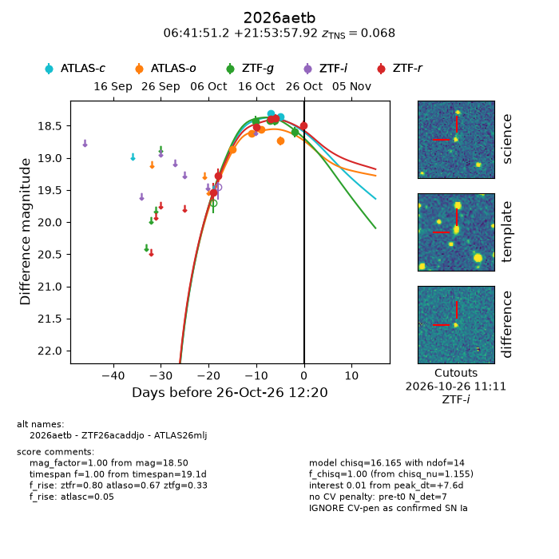
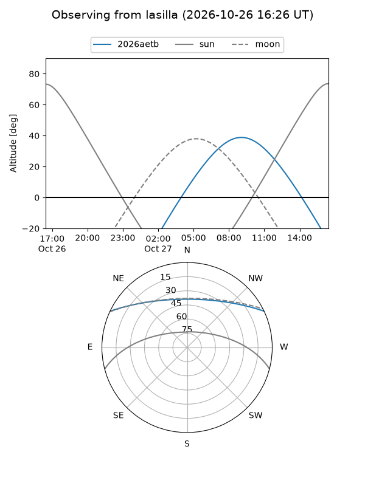
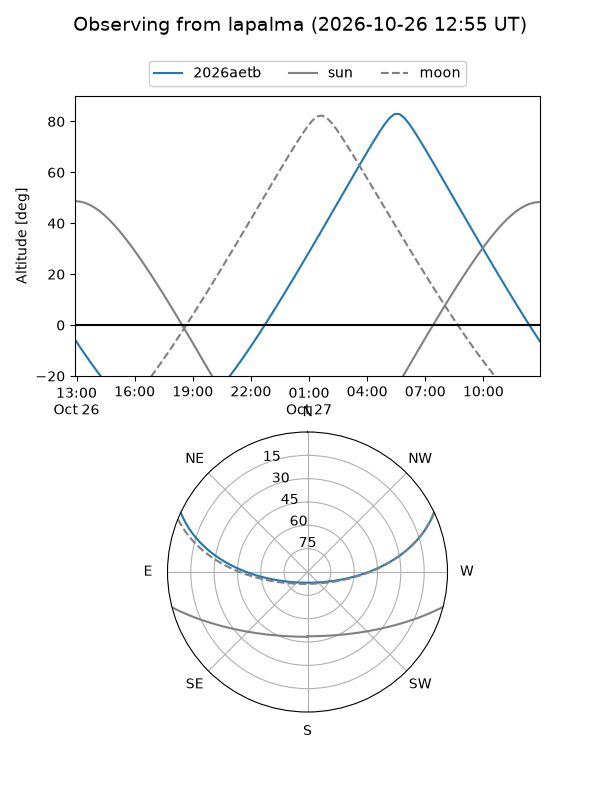
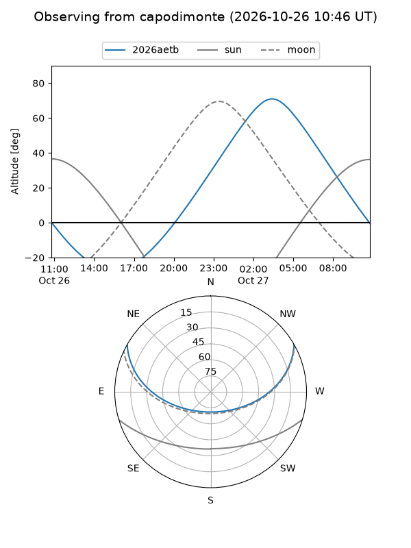
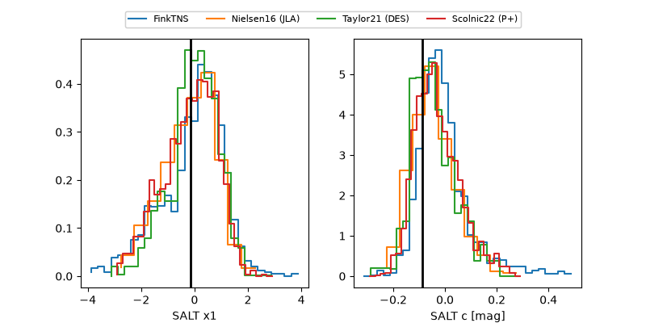

2026aetb
Target 2026aetb at 2026-10-26 12:22
Aliases and brokers:
FINK-ZTF: ztf.fink-portal.org/ZTF26acaddjo
Lasair-ZTF: lasair-ztf.lsst.ac.uk/objects/ZTF26acaddjo
ALeRCE-ZTF: alerce.online/object/ZTF26acaddjo
YSE-PZ: ziggy.ucolick.org/yse/transient_detail/2026aetb
TNS name: wis-tns.org/object/2026aetb
Direct TNS query: direct search
alt names
ZTF26acaddjo (ztf,fink_ztf)
2026aetb (tns,yse)
ATLAS26mlj (atlas)
Coordinates:
equatorial (ra, dec) = 100.4633,+21.89942
equatorial (HMS+DMS) = 06:41:51.19,+21:53:57.92
galactic (l, b) = (192.2676,+7.79029)
Flags:
TNS type: SN Ia
TNS redshift: 0.0680
peak dt: +7.6
Photometry:
last atlasc=18.35, atlaso=18.73, ztfg=18.60, ztfr=18.50
2 atlasc, 4 atlaso, 4 ztfg, 6 ztfr detections
Lightcurve

Visibility



Additional plots
